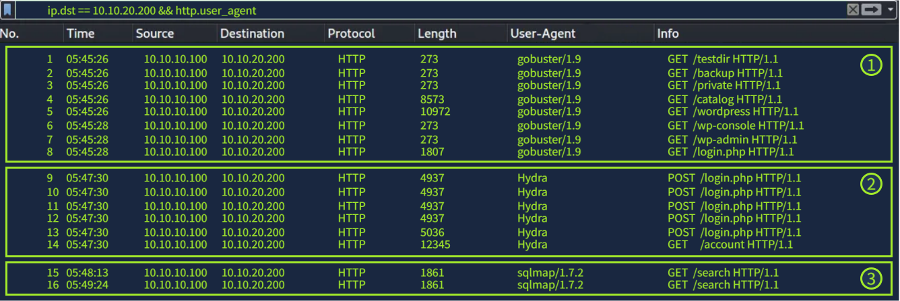
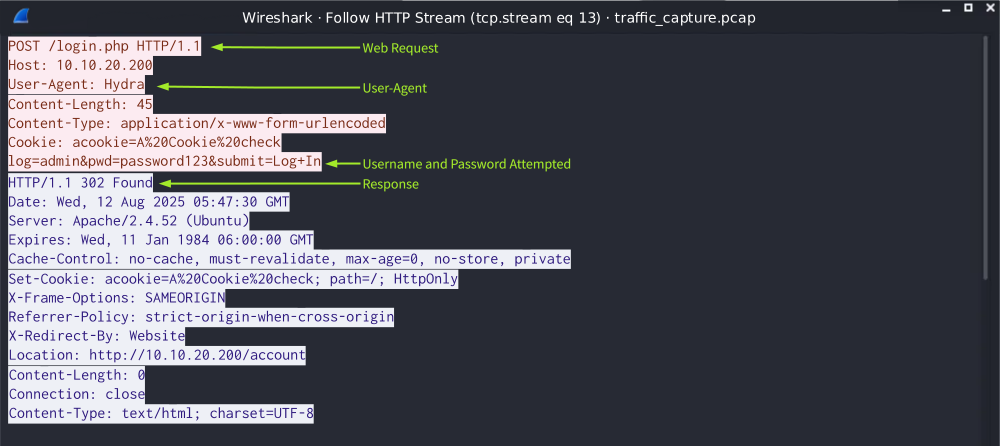

Client-Side attacks
Client-Side attacks rely on abusing weaknesses in user behavior or on the user's device.
SOC Limitations:The tools available to an analyst, such as server-side logs and network traffic captures, offer little to no visibility into what occurs inside a user's browser. As discussed above, client-side attacks occur on the user's system, meaning they can execute malicious code, steal information, or manipulate the environment without generating suspicious HTTP requests or network traffic that the SOC can see. As a result, detecting these attacks from a SOC perspective is often difficult or even impossible without additional browser-side security controls or endpoint monitoring.
- Common Client-Side Attacks:
- Cross-Site Scripting (XSS) is the most common client-side attack, in which malicious scripts are run in a trusted website and executed in the user's browser. If your website has a comment box that doesn't filter input, an attacker could post a comment like: Hello . When visitors load the page, the script runs inside their browser, and the pop-up appears. In a real attack, instead of a harmless pop-up, the attacker could steal cookies or session data.
- Cross-Site Request Forgery (CSRF): The browser is tricked into sending unauthorized requests on behalf of the trusted user.
- Clickjacking: Attackers overlay invisible elements on top of legitimate content, making users believe they are interacting with something safe.
Server-Side Attacks
Server-side attacks rely on exploiting vulnerabilities within a web server, the application's code, or the backend that supports a website or a web application.
Catching Server-Side Attacks: One advantage for defenders when dealing with server-side attacks is that they leave a trail of evidence, if you know where to look. Every web request sent to an application is processed by the server and is recorded in logs or other monitoring systems. These requests also travel across the network, meaning network traffic can reveal suspicious behavior.
- Common Server-Side Attacks:
- Brute-force attacks occur when an attacker repeatedly attempts different usernames or passwords in an attempt to gain unauthorized access to an account. Automated tools are often used to send these requests quickly, allowing attackers to go through large lists of credentials and common passwords. T-Mobile faced a breach in 2021 that stemmed from a brute-force attack, allowing attackers access to the personally identifiable information (PII) of over 50 million T-Mobile customers.
- SQL Injection (SQLi) relies on attacking the database that sits behind a website and occurs when applications build queries through string concatenation instead of using parameterized queries, allowing attackers to alter the intended SQL command and access or manipulate data. In 2023, an SQLi vulnerability in MOVEit, a file-transfer software, was exploited, affecting over 2,700 organizations, including U.S. government agencies, the BBC, and British Airways.
- Command Injection is a common attack that occurs when a website takes user input and passes it to the system without checking it. Attackers can sneak in commands, making the server run them with the same permissions as the application.
Log-Based Detection
- Client IP Address = A known malicious or outside of the expected geo range
- Timestamp and Requested Page = Requests made at unusual hours or repeated in a short period of time
- Status Code = Repeated 404 responses indicating a page could not be found
- Response Size = Significantly smaller or larger than normal response sizes
- Referrer = Referring pages that don't fit normal site navigation
- User-Agent = Outdated browser versions or common attack tools (e.g. sqlmap, wpscan)
Attacks in Logs
Next, we'll examine an example of a condensed attack sequence. The sequence of log entries will only display the attacker's requests; in a real-world scenario, however, benign traffic would make up the vast majority of log entries, making it essential to develop a sharp eye for spotting malicious patterns amid normal activity. It is also important to note that in the example below, the query string in the SQLi attack is logged, so you will be able to see the full SQLi payloads.
- The attacker tests for potential directories and forms to exploit with a directory fuzz. The 200 response codes signify valid finds for the attacker.
- Next, the attacker exploits the login.php form found with a brute-force attack. Note the repeated POST requests in quick succession. The last POST request has a different response code, 302 Found, which, in this case, signifies a successful login attempt. The page then redirects to the user's account page at /account.
- Once the attacker gains access to the account, they attempt two SQLi payloads,
' OR '1'='1 and 1' OR 'a'='a, on the /search form. If the application builds SQL queries dynamically instead of using parameterised queries, the attacker could dump the database.

Log Limitations (The above sample log shows the request method, the requested page, and the status code, but not the actual credentials or payload that was submitted in the request.)
Network-Based Detection
Allows analysts to examine the raw data exchanged between a client and a server. By capturing and inspecting packets, analysts can observe attack behavior on a more detailed level, including the underlying transport protocols and the application data itself. Network captures are more verbose than server logs, revealing the data behind every request and response. This can include full HTTP headers, POST bodies, cookies, and uploaded and downloaded files, for example. Protocols that rely on encryption, like HTTPS and SSH, limit what can be seen in packet payloads without access to the decryption keys.
- Attacks in Network Traffic
- Directory fuzz to find valid directories or forms.
- Brute-force attempt with packet 13 being a successful login: You can use the Wireshark filter
http.response.code == 302to search for successful logins. - SQL injection attempts: su Wireshark puoi cercare ip.src dell'attaccante, individua chi aveva qualche info su sql, e infine follow http stream

